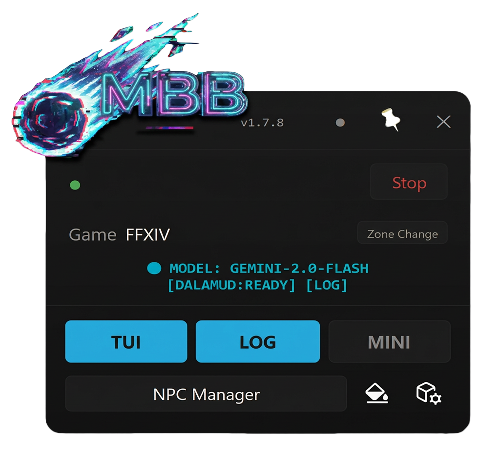
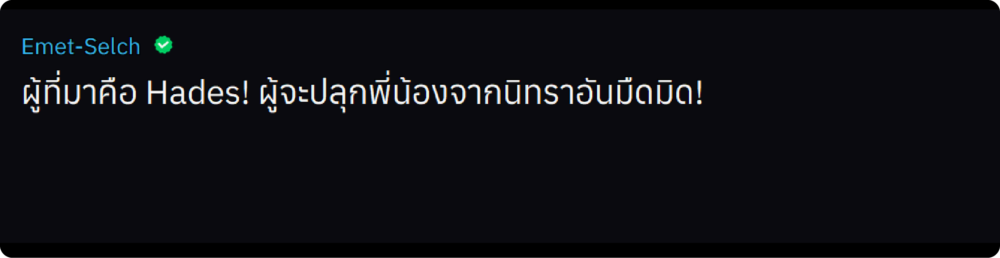
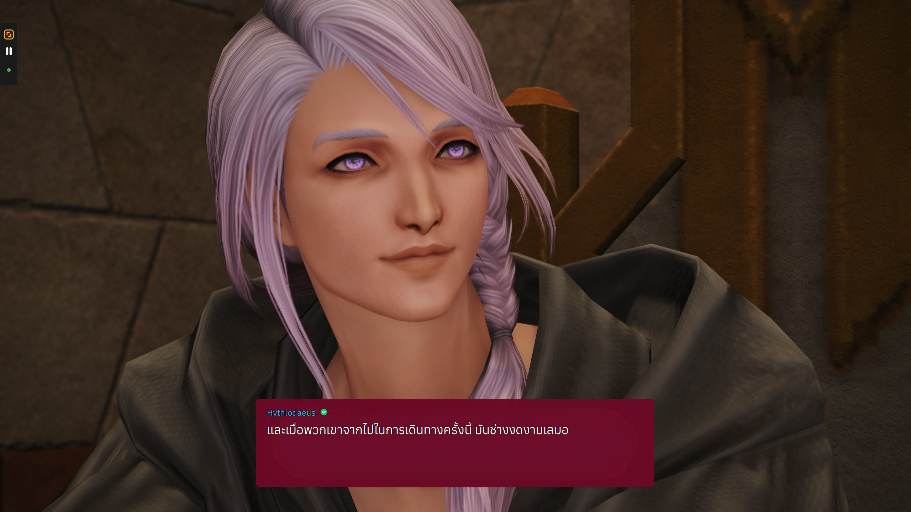
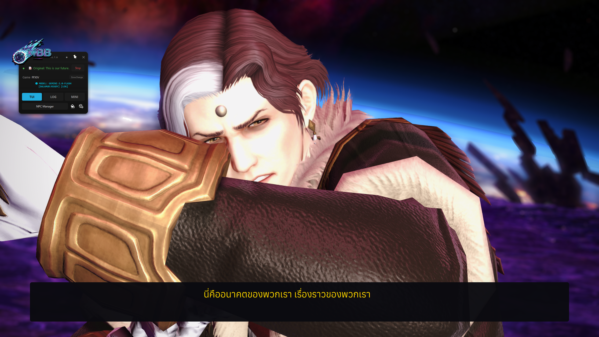
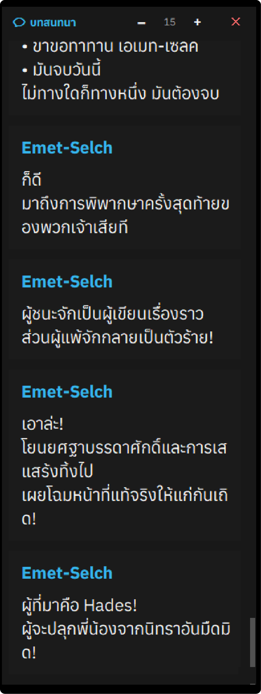

UI Systems
Main Window layout math, TUI modes, DissolveOverlay dispatcher rules, Logs panel, Glass Mode — รวมทั้ง Tkinter (legacy dialog/choice) และ PyQt6 (main panels + overlays)
Main Window (PyQt6)
หน้าหลักของแอป — pyqt_ui/main_window.py. ขนาดหน้าต่างคำนวณ dynamic จาก logo overflow ไม่ใช่ค่าคงที่.
Layout Math
| Constant | Value | ความหมาย |
|---|---|---|
BG_W | 296 px | Main display area width |
BG_H | 265 px | Main display area height |
MARGIN_BASE | 12 px | Right/bottom margin (shadow allowance) |
logo_w = int(BG_W * 0.6) # 177 px
logo_overflow_left = max(0, logo_w - BG_W // 2)
logo_overflow_top = logo_h // 2
margin_left = logo_overflow_left + 4
margin_top = logo_overflow_top + 4
margin_right = MARGIN_BASE
margin_bottom = MARGIN_BASE
win_w = margin_left + BG_W + margin_right
win_h = margin_top + BG_H + margin_bottomLogo placement intent: ขอบขวาของ logo = กลาง bg panel. Logo overflows top by half its height.
logo_x = bg_center_x - logo_w
logo_y = margin_top - logo_h // 2 # ต้องเป็นบวกเสมอLogo เป็น QLabel overlay (ไม่อยู่ใน layout) + WA_TransparentForMouseEvents + raise_().

Header Bar
Logo คลุมครึ่งซ้ายของ header → push content ไปทางขวา:
header_margin_left = BG_W // 2 - 14 # 134 pxVersion label: 7pt (FONT_PRIMARY), QSS padding-top: 4px.
ControlPanel + BottomBar
┌─────────────────────────┐ │ HeaderBar (44px) │ ├─────────────────────────┤ │ ● Ready [Stop] │ ← status dot + btn_start_stop │ Game FFXIV │ ← game info row (11pt) │ MODEL: GEMINI [READY] │ ← lbl_status_info (8pt mono) │ │ ← addStretch(1) ≈ 31px ├─────────────────────────┤ │ TUI LOG MINI │ │ NPC Manager 🎨 ⚙ │ └─────────────────────────┘ ← BottomBar 100px
Status info widget: QLabel#status_info in control_panel.py (เคยอยู่ใน BottomBar — ย้ายขึ้นมาใกล้ Game info).
MBB.py alias: self.info_label = self.control_panel.lbl_status_info. Signal path: signals.info_update → _on_info_signal() → set_status_info()
BG_H ให้ stretch gap ตรงกลางยังอยู่ที่ ~25-35px
Initial Window Position
pos_x = int(sg.width() * 0.10) # 10% from left
pos_y = sg.top() + (sg.height() - win_h) // 2 # vertically centeredMini UI
Tkinter Toplevel, 50×176, frameless (overrideredirect), always-on-top. Snap ที่ขอบซ้ายจอ, จัด Y ตรงกับ main window.

Asymmetric Rounded Corners (Win32)
CreateRoundRectRgn + ellipse=10 (~5px) — ขวามน, ซ้ายเหลี่ยม (ชิดขอบจอ).
Highlight Border
Flash ขอบขาว 1.2 วินาทีตอน show:
- Flash:
highlightthickness=2 #e0e0e0 - ปกติ:
highlightthickness=1 #2a2a2a
Light Theme Icon Inversion
White-line icons (play/pause/expand) auto-invert via PIL _invert_rgb_keep_alpha() + luminance check.
TUI — Dialog & Choice Mode
Tkinter renderer ใน translated_ui.py. ใช้สำหรับ ChatType 61 (dialogue) + 0x0045/0x0046 (choice).


Text Style System v4
Speaker name — normal weight (no bold) ทุก mode เพื่อ name-detection compat. Strip **, *, ZWS chars ก่อน name in self.names check (3 sites: _handle_normal_text_fast, _handle_normal_text, display_speaker_name).
| Mode | Speaker color | Body color |
|---|---|---|
| Dialogue — known | #38bdf8 cyan | white |
Dialogue — unknown (???) | #a855f7 purple | white |
| Battle | orange (= body) | #FF6B00 |
| Cutscene | yellow (= body) | #FFD700 |
Segments ใน dialogue
| Segment | Style |
|---|---|
**highlight** | #FFB366 light orange, bold |
*italic* | FC Minimal Medium, italic |
| Character name (detected at render) | cyan thin / mode-color bold |
Name Detection Pipeline (v4)
text + names list
↓
RichTextFormatter.parse_rich_text_with_names()
↓
segments: [{text, font_style: 'normal'|'bold'|'italic'|'name'}]
↓
create_rich_text_with_outlines()highlight_special_names() เป็น no-op (legacy 『』 brackets removed). _needs_rich_text() เช็ค * markers OR names.
Call sites ของ _needs_rich_text (4): fast-no-speaker (~3258), post-typewriter (~4323), show-full-text (~4477), font-change-reapply (~4998).
Lock Mode Shadow System
2 engines ผ่าน self._use_pil_shadow flag:
| Flag | Engine | Status |
|---|---|---|
False (default) | Canvas Multi-Ring | ACTIVE เสถียร |
True | PIL Gaussian Blur | Dormant ใช้กับ transparentcolor ไม่ได้ |
Multi-Ring ใน lock mode 1 (transparent bg) — 3 layers, 36 items
| Layer | Offset | Positions | Color |
|---|---|---|---|
| Outer | ~3px | 16 (circle) | #111111 |
| Middle | ~2px | 12 (circle) | #080808 |
| Inner | ~1px | 8 (square) | #000000 |
Normal mode (มี bg): 1 layer, 8 items, outline #000000 ~1px.
text="" rule
Shadow ต้อง sync กับ typewriter. Shadow creation sites ส่ง empty string ถ้า typewriter active. เฉพาะ speaker-name shadows เท่านั้นที่ส่ง actual text.
itemconfig safety
outline_container อาจมีทั้ง text + image items. ต้อง guard:
if canvas.type(outline) == "text":
canvas.itemconfig(outline, text=...)Auto-Show Opacity
show_tui_on_new_translation() MUST restore opacity unconditionally
ไม่ gate ด้วย is_window_hidden — มิฉะนั้น mid-fade arrivals ทำให้ window ค้างที่ alpha ต่ำ
def show_tui_on_new_translation(self):
if self.state.is_window_hidden:
self.root.deiconify()
self.state.is_window_hidden = False
self.restore_user_transparency() # always, every callSetting gate อยู่ที่ MBB.py:_trigger_tui_auto_show() เท่านั้น — อย่าเพิ่ม setting check ใน show_tui_on_new_translation() ไม่งั้น auto-show พัง.
Fade-Race Defense (3 layers)
| Layer | Where | What |
|---|---|---|
| 1. Entry | update_text | Cancel fade_timer_id + window_hide_timer_id, reset is_fading, bump last_activity_time |
| 2. Defer | fade_out_text at α=0 | 80ms after() before destructive cleanup |
| 3. Recheck | _do_fade_destructive_cleanup | Re-check is_fading + activity time ก่อน wipe; abort ถ้าถูก interrupt |
User prefs (เช่น auto_hide_after_fade) untouched — รีเซ็ตเฉพาะ runtime flags.
Resize System
Methods: start_resize() → on_resize() → stop_resize(). Bindings อยู่ใน setup_bindings() เท่านั้น.
Hard rules
📐 Position lock
geometry() MUST include position (f"{w}x{h}+{x}+{y}") — resize_anchor_x/y เก็บที่ start_resize()
🚫 No SetWindowRgn
ห้ามเรียก apply_rounded_corners_to_ui() ระหว่าง drag — Win32 region create + redraw = jank. Re-apply ที่ stop_resize() หลัง 150ms after()
🔁 Single binding
No duplicate bindings — _create_resize_handle() ไม่ re-bind
⏱ 16ms throttle
~60 FPS throttle on self.root.geometry() calls
WM_NCLBUTTONDOWN hand-off — DO NOT USE
Causes PyEval_RestoreThread GIL fatal เมื่อเรียกใน Tk callback. SendMessageW blocks main thread inside modal resize loop; Tk window proc fires WM_PAINT/WM_SIZE back to NULL Python thread state → process terminates.
Use manual resize + global bind_all <ButtonRelease-1> for capture (so release fires even ถ้า handle ถูก clip โดย region).
Layout restore after resize
_restore_layout_light(ระหว่าง drag, throttle 150ms) +_restore_layout_after_resize_universal(on release)pack_configure(ไม่ใช่pack_forget)tk.call("raise", widget._w)(ไม่ใช่widget.lift()— Canvas overridesliftเป็นtag_raise)- Re-bind auto-hide hover bindings
- Re-apply rounded corners
default_width/_height sync ใน stop_resize หลัง save — chat-type switch กลับ dialog ไม่งั้น snap กลับ size เก่าใน cache.
Per-Mode Geometry
tui_positions[mode] + tui_geometries[mode] — save per dialog/battle/cutscene.
- Mode switch saves OUTGOING + loads INCOMING
- Choice mode เป็น transient (ไม่ save)
_clamp_to_screenguards multi-monitor edge cases
Mode-Specific UI
| Mode | Hover-revealed buttons |
|---|---|
| Dialog / Choice | close + lock + color + fadeout + resize handle |
| Battle / Cutscene | close + resize handle เท่านั้น (lock/color/fadeout pack_forget) |
WASD auto-hide bypass ใช้กับ ทั้ง battle + cutscene (text ต้อง stream ต่อเนื่อง).
Step-Lock Transparency (TUI, 6 levels)
80 / 84 / 88 / 92 / 95 / 100 — ImprovedColorAlphaPickerWindow.TRANSPARENCY_STEPS ใน tui_color_picker.py.
- Custom Canvas slider (ไม่ใช่
tk.Scale) with magnetic snap - Step pips (1-6) แสดงเฉพาะตอน drag
- Win32 corner radius 12 (เคย 20 — handle ถูก clip)
- Legacy top-level
transparencykey purged; TUI alpha คุมโดย in-TUI picker เท่านั้น
File Split (Phase 1)
translated_ui.py extracted to:
tui_shadow.py—ShadowConfig+BlurShadowEnginetui_color_picker.py—ImprovedColorAlphaPickerWindowtui_rich_text.py—RichTextFormatter
Re-imported ที่ top ของ translated_ui.py — external API unchanged.
DissolveOverlay (Battle/Cutscene)
641-line QWidget, frameless + translucent (WA_TranslucentBackground). Self-contained PyQt6 เพราะ Tkinter transparentcolor เป็น 1-bit (ไม่มี alpha gradient).

Visual
paintEventวาด horizontalQLinearGradient: 0% → 5% opaque → 95% opaque → 0% (dissolve ขอบซ้าย-ขวา)- BG
#14161c90% alpha; text painted AFTER gradient → fully opaque - Vertical centering:
block_top = max(pad_y, (h - block_h) // 2) - Per-mode font color: battle
#FF6B00, cutscene#40E0D0(turquoise — เปลี่ยนจาก gold v1.8.9) - Battle speaker name
#FFFFFFwhite (contrast กับ orange body) - Cutscene speaker = body color (single-tone cinematic)
Auto-Hide
set_text() restart 10s QTimer (AUTO_HIDE_MS). On timeout: fade-out via QPropertyAnimation(windowOpacity) 500ms → hide().
- New translation ระหว่าง fade → snap opacity กลับ 1.0 ทันที
- Cursor inside overlay → timer restart (ไม่ hide ขณะ user drag/resize)
Dispatcher Rules — CRITICAL
translated_ui.update_text decorator routes by chat_type. 3 must-not-violate rules:
_route_to_dissolve_overlay MUST NOT update current_chat_type / battle_mode_active / cutscene_mode_active. Flags drive _get_current_mode_name() สำหรับ Tk save logic; ถ้า flip ขณะ Tk มี pending move/resize timers → tui_positions[battle/cutscene] ถูก clobber ด้วย coords ของ dialogue
show_for_mode(mode)
set_mode alone เปลี่ยนแค่สี ไม่ใช่ geometry. show_for_mode idempotent (no-op ถ้า visible แล้ว)
_do_tui_auto_show ต้อง early-return เมื่อ _dissolve_active = True
ไม่งั้น auto-show fires ทุก status update และ re-deiconify root ที่เพิ่ง withdraw
Defensive: _route_to_dissolve_overlay cancels move_end_timer + resize_end_timer + _deferred_render_id เพื่อ kill stale saves.
Diagnostic Logs
เก็บ [DISSOLVE-DBG] trace logs ทุก dispatch + save site ไว้ — ราคาถูก, valuable มากตอน debug mode-switch:
route_to_overlay: mode=X chat_type=Y tk_state=Z dissolve_active=B tk_was_visible=B
show_for_mode(M): loaded pos=(X,Y) size=(W,H) → clamped=...
OVERLAY saved M / TK saved MSettings JSON Cleanup
tui_positions[battle/cutscene] corrupts
ลบ tui_positions[battle/cutscene] + tui_geometries[battle/cutscene] จาก settings.json → DissolveOverlay fall back ไป defaults (battle=top-center, cutscene=bottom-center)
Translated Logs UI
PyQt6 panel ใน pyqt_ui/translated_logs.py (~1100 LOC). แทนที่ Tkinter version. Compat shims (root, winfo_exists, state, withdraw) ทำให้ MBB.py ไม่ต้องแก้มาก.

Bubbles
ChatBubble(QFrame) วาด 1 rounded rect. Speaker label color-coded:
???purple- dialogue choice gold
- Lore dim
- normal cyan
Thai-Aware Wrap
Qt QLabel.wordWrap break แค่ whitespace; ภาษาไทยไม่มี whitespace.
_insert_thai_breakpoints() inject ZWSP (U+200B) ที่ Thai leading-vowel boundaries (เ แ โ ใ ไ).
Bubble Width
setHeightForWidth(True)
+ MinimumExpanding policy
+ heightForWidth(w) overrideQt ใช้ heightForWidth แทน naive sizeHint → wordWrap ทำงานจริง. บวก eventFilter on viewport + inner QLabel maxWidth cap → ป้องกัน overflow จาก setWidgetResizable(True).
QSS Font
Qt stylesheets override setFont() สำหรับ QLabel ใน styled widget. ใช้ font-family + font-size ผ่าน QSS เพื่อให้ FontPanel changes propagate.
Background-Only Opacity
setWindowOpacity() fade ทุกอย่าง. แทนด้วย rgba ใน QSS สำหรับ QFrame#logs_bg ขับด้วย slider 10-100 — bubbles paint solid colors stay 100% opaque.
Surgical self.bg.setStyleSheet(...) ต่อ slider tick (ไม่ใช่ full _apply_theme()) — เลี่ยง 60Hz polish thrash. 350ms QTimer debounce on disk write.
App-Wide Hover Detection
Default Qt widgets emit mouseMoveEvent เฉพาะตอน button pressed. Solution:
setMouseTracking(True) + WA_Hover recursive on children
+ app.installEventFilter(self)
for MouseMove / HoverMove / HoverEnter / EnterThrottle _save_geometry ที่ 500ms QTimer เพื่อ disk I/O ไม่ starve hover poll.
Step-Lock Transparency (LOG, 4 levels)
10 / 40 / 80 / 100 — TranslatedLogsPanel.TRANSPARENCY_STEPS. Snap-on-drag + no-op detection.
Migration: existing settings.json value snaps to nearest step on load.
Lock Mode
Session-only (เริ่มต้นเป็น unlocked). Drag ไม่มี print() between events. stop_move log ครั้งเดียวด้วย logging.info.
Exception handlers: except (AttributeError, tk.TclError): — never bare except.
Glass Mode
pyqt_ui/styles.py:get_glass_overrides(). Toggle ผ่าน ● button ใน header → main_window._on_toggle_glass() rebuild QSS:
- ปุ่มทั้งหมด: transparent bg, no border, faint text (~20% opacity)
- Hover: brighter (~50%)
- Toggled: ~35%
- Labels: very faint (~14-20%)
- Logo always visible (QPixmap overlay, ไม่อยู่ใน QSS)
Shadow: blur 24→16, alpha 160→60 (เมื่อ glass on).